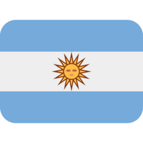

Sobre Mim
PROFILE // 30 SECOND BRIEF
Engenharia que conecta software, processos e mundo físico.
Formado em Engenharia de Computação pela UNIVALI em 2024, atuo no desenvolvimento de sistemas para administração, gestão e otimização de processos, combinando experiência em software, banco de dados, automação, IA e sistemas embarcados.
 ● System online
● System onlineProfile // 01
Sou Engenheiro de Computação, formado pela Universidade do Vale do Itajaí (UNIVALI) no segundo semestre de 2024. Minha atuação conecta desenvolvimento de software, automação, dados e integração entre hardware e software.
Atualmente trabalho como Desenvolvedor de Sistemas, participando do desenvolvimento e evolução de soluções voltadas para administração, gestão empresarial e otimização de processos industriais.
Minha trajetória inclui sistemas embarcados, aplicações web, inteligência artificial aplicada à visão computacional, processamento digital de sinais, bancos de dados, integrações, regras de negócio e modernização de sistemas.
KNOWLEDGE MAP // 02
Mapa de competências
Visão resumida dos conhecimentos aplicados ao longo da formação, pesquisa e experiência profissional.
MISSION TIMELINE // 03
Evolução da trajetória
Communication // 04
Idiomas
- Espanhol · Fluente

- Português · Fluente

- Inglês · Leitura e escrita intermediárias
Engineering // 05